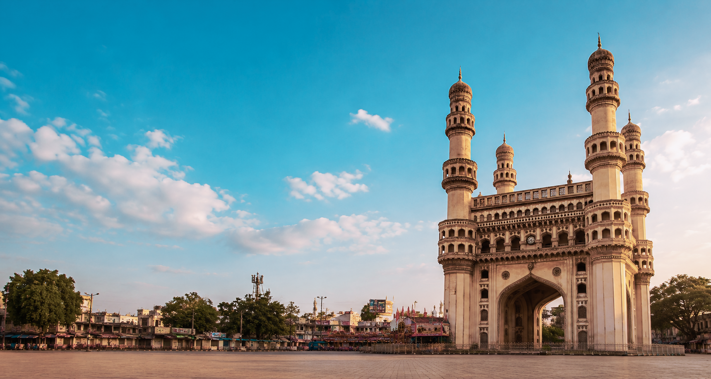
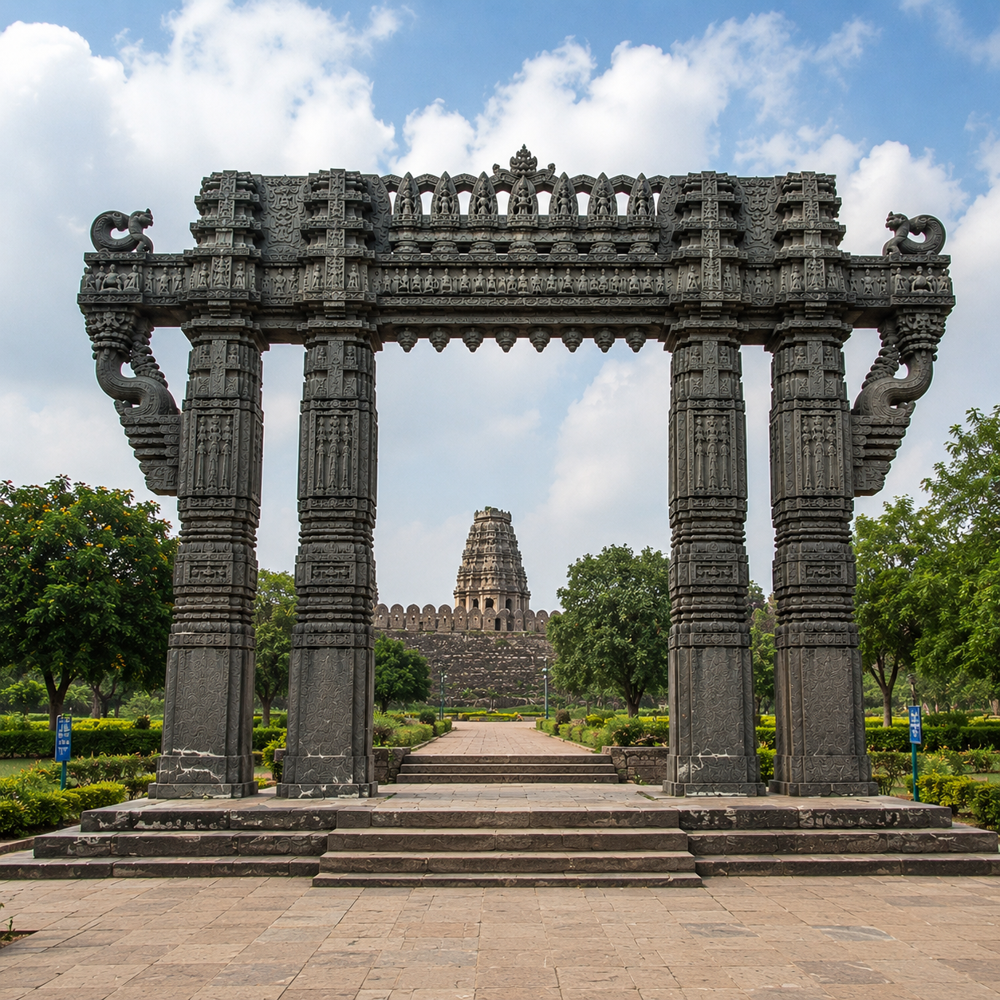
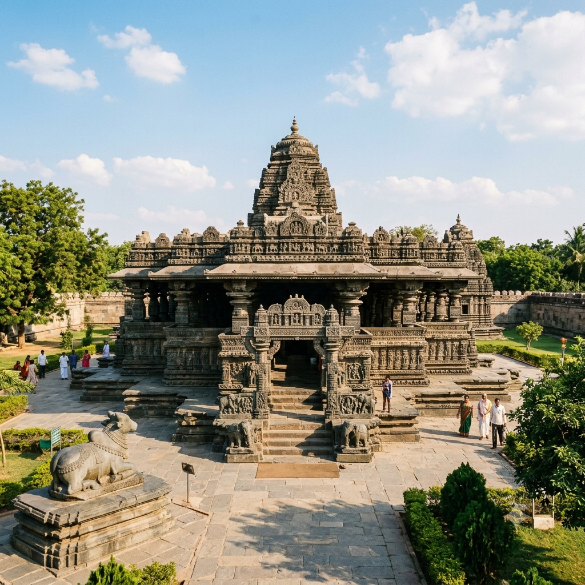
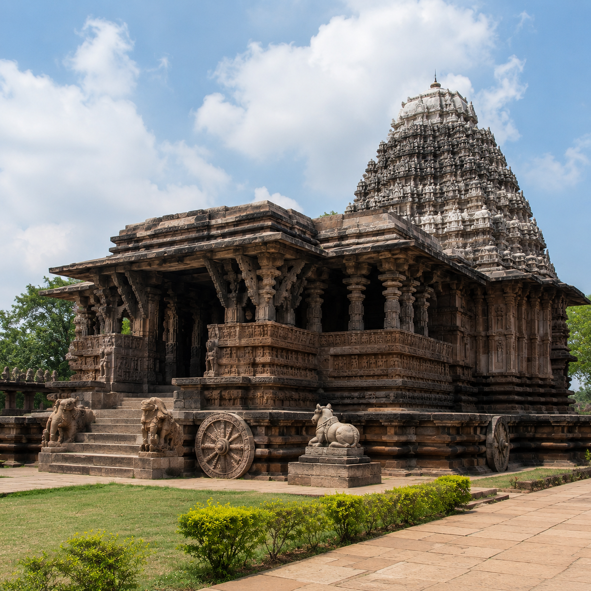
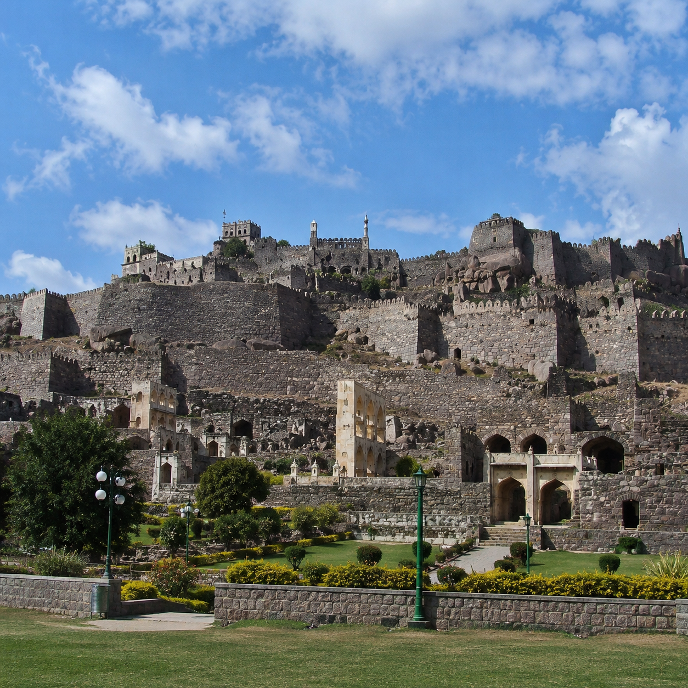
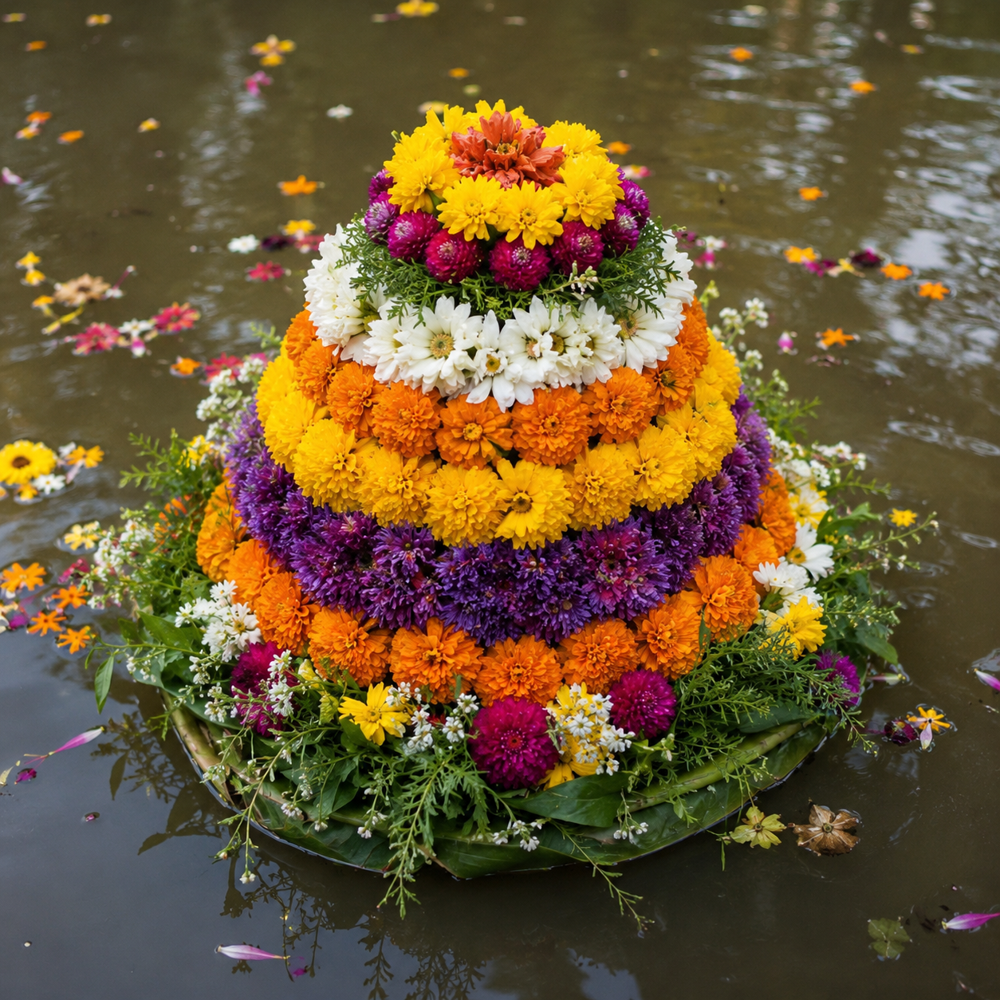
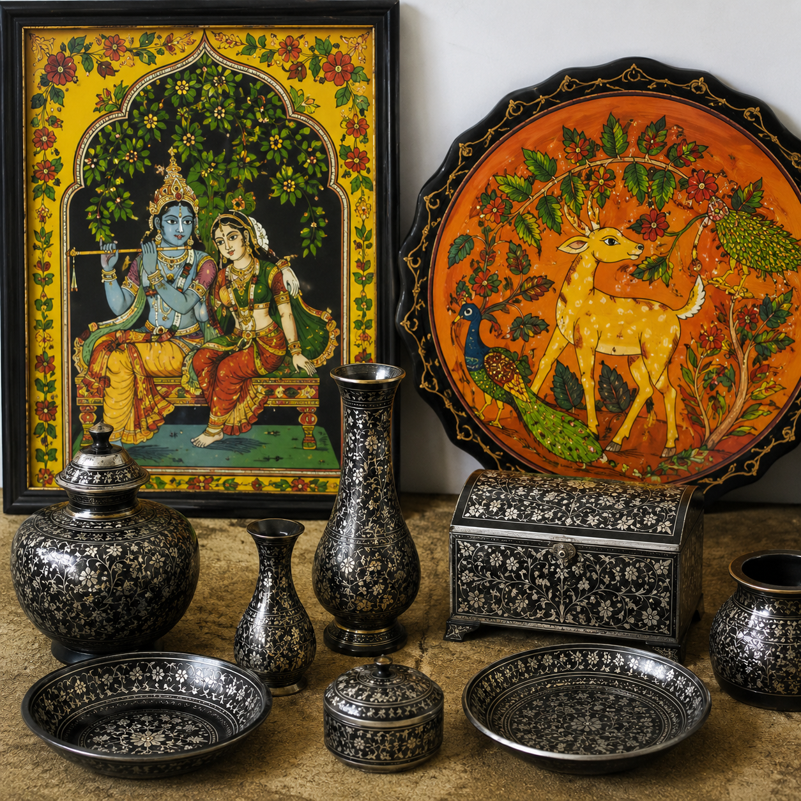

History
The Struggle That Became A State
Telangana, located on the Deccan Plateau, has a history dating back to prehistoric times, with evidence
of Stone Age settlements and the ancient Assaka Mahajanapada (700–400 BCE). It later flourished under
the Satavahana dynasty (1st century BCE–3rd century CE), followed by medieval rulers like the Kakatiyas
(12th–14th century), who built the famed Warangal Fort and promoted Telugu culture. After their fall,
the region came under the Delhi Sultanate, Bahmani Sultanate, and the Qutb Shahi dynasty, which founded
Hyderabad in 1591. The Nizams of Hyderabad (1724–1948) modernized the region with railways,
universities, and administrative reforms but resisted joining India after independence, leading to the
Indian Army’s annexation in 1948. Telangana was merged with Andhra Pradesh in 1956, sparking decades of
agitation for a separate state. Finally, on June 2, 2014, Telangana was carved out as India’s 29th
state, with Hyderabad as its capital, marking the culmination of its long struggle for self-identity.
◆ Ancient Roots ◆ Dynastic Glory ◆ Colonial Legacy
◆ Statehood Triumph
Layers Of Time

The Kakatiya Kala Thoranam is not just an ancient stone arch — it is a
timeless symbol of Telangana’s heritage, resilience, and pride, standing tall for over 800
years.

The Thousand Pillar Temple, built in the 12th century by the Kakatiya
dynasty, is a masterpiece of star‑shaped architecture dedicated to Shiva, Vishnu, and Surya.
Its richly carved pillars and sculptures symbolize Telangana’s devotion and artistic
excellence.

The Ramappa Temple, constructed in the 13th century under Kakatiya rule, is
renowned for its floating bricks and celestial dancer carvings. Recognized as a UNESCO World
Heritage Site, it stands as a testament to Telangana’s engineering brilliance and cultural
grandeur.

Golconda Fort, expanded between the 12th and 16th centuries, is famed for
its acoustic marvels and diamond trade legacy. Once the capital of the Qutb Shahi dynasty,
it remains a symbol of Telangana’s royal power, resilience, and architectural ingenuity.
Culture
A Living Mosaic

Bathukamma is Telangana’s floral festival, celebrated by women with vibrant
stacks of seasonal flowers. It symbolizes nature’s beauty, feminine grace, and community
spirit.

Hyderabadi Biryani, a royal dish blending Mughal and Telugu flavors, is
famed for its aromatic basmati rice, tender meat, and rich spices. It represents Telangana’s
culinary fusion and heritage.

Nirmal Paintings, crafted in the town of Nirmal, are known for their golden
hues and mythological themes. They showcase Telangana’s artistic finesse and storytelling
tradition.
Bidriware, a metal craft from Hyderabad, features intricate silver inlay on
blackened alloy. It reflects Telangana’s Indo-Persian artistry and timeless elegance.

Bonalu is a traditional festival honoring Goddess Mahankali, marked by
offerings in decorated pots, vibrant processions, and fierce Pothuraju performances. It
embodies devotion and local pride.

Bharatanatyam, widely performed in Telangana, is a classical dance of
rhythm and expression. It symbolizes spiritual storytelling and artistic refinement.

Kuchipudi, a classical dance form practiced in Telangana, blends graceful
movements with expressive storytelling. It reflects devotion, discipline, and cultural
continuity.